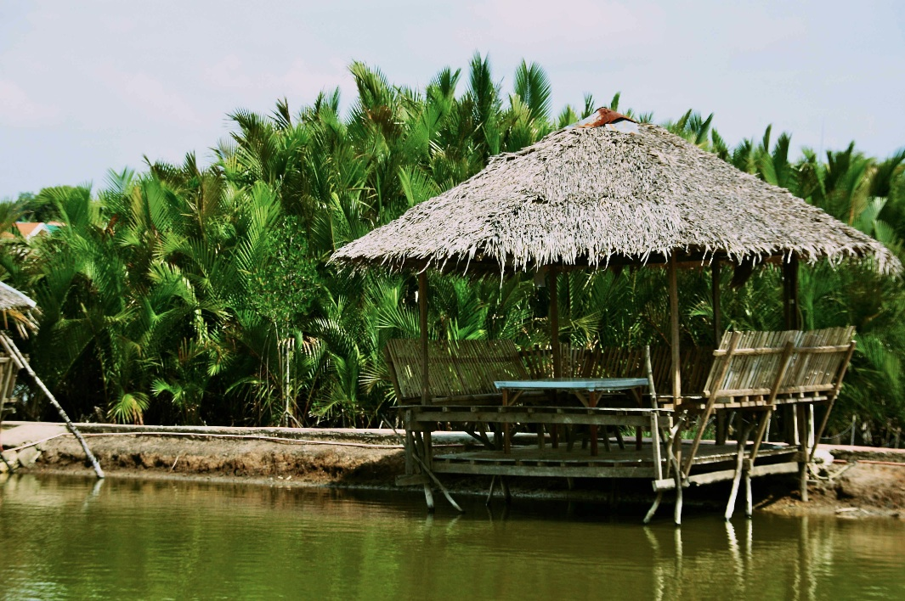
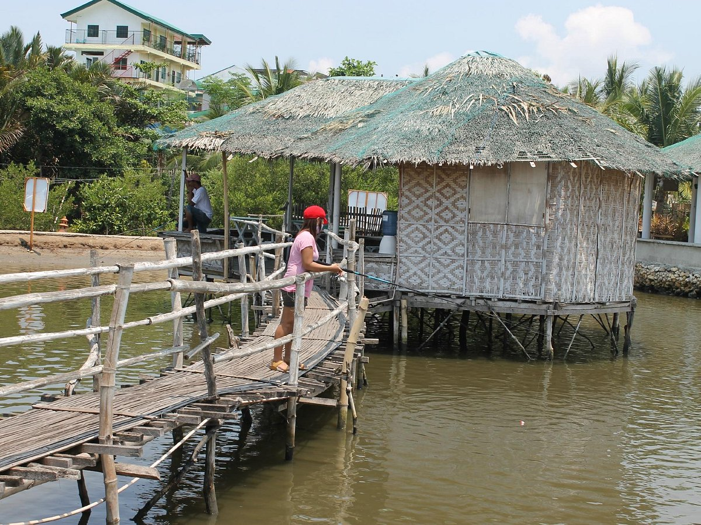
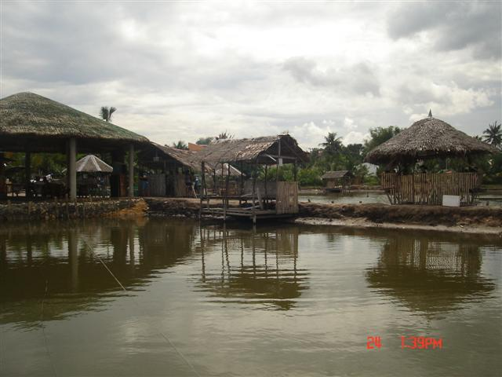
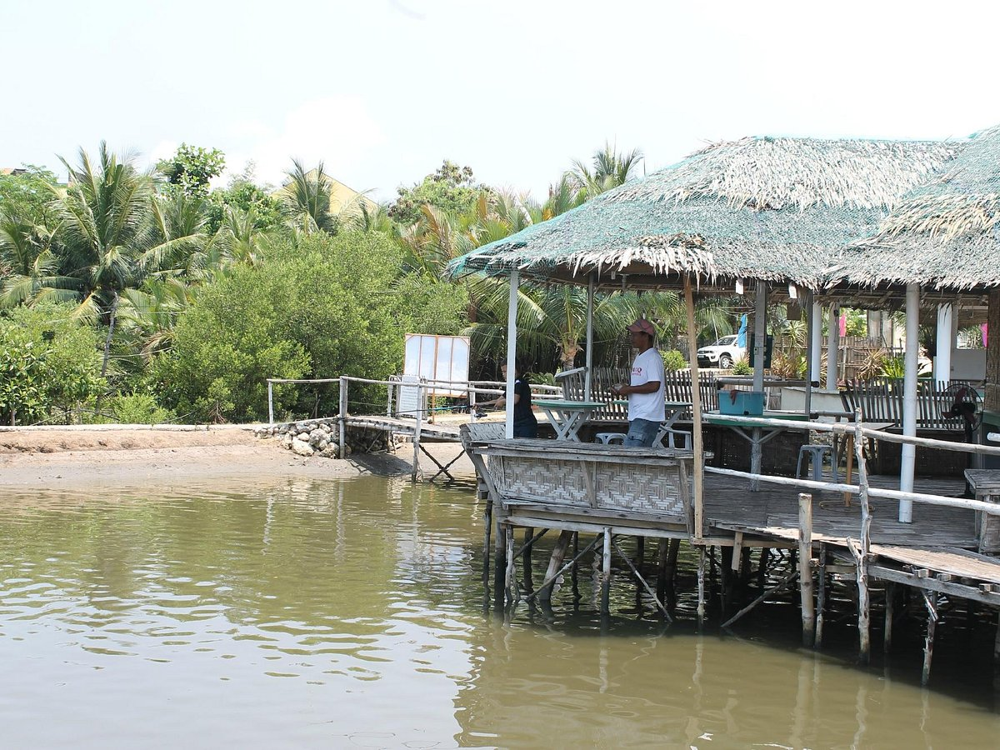
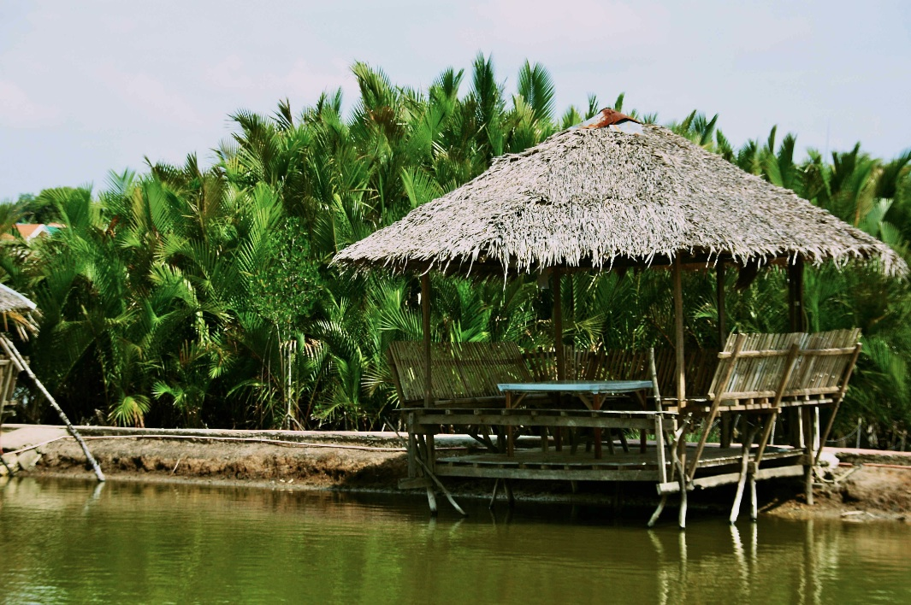
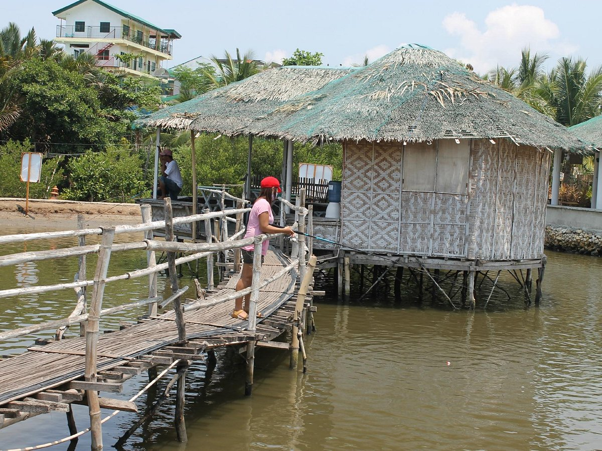
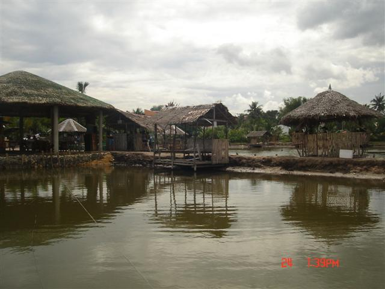
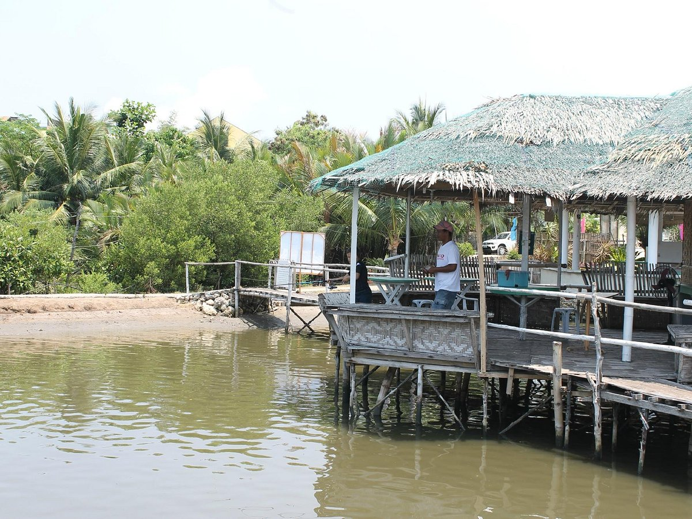

ABOUT THE PLACE
D'Pond Family Fun Fishing is a popular recreational spot in Liloan, Cebu that offers a relaxing and enjoyable experience for families, friends, and fishing enthusiasts. The facility features ponds stocked with various fish species, providing visitors with the opportunity to try their hand at fishing in a peaceful, well-maintained environment. Apart from fishing, D'Pond also offers other fun activities like boating, and it has areas for picnics, making it an ideal spot for a day out with family or friends. It's a great place to unwind, bond with loved ones, and enjoy a laid-back outdoor experience in Liloan.